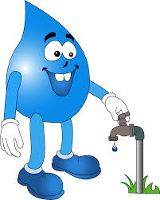
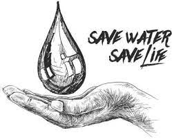

Earth is the only known planet in this universe where life is possible only because of the availability of water and oxygen. Water is most important necessity of life for all the living beings on the earth. Without water no one can exist even for a day. We also know that there is very less percentage of clean water means drinking water available on the earth. So, we should not waste clean water and save it for future generations.
We should change our bad habits into positive ones and spread awareness among people about the importance of clean water. We should promote the less use and saving of clean water to maintain the continuity of life on the earth.
Water is the precious gift of God on the earth. Life exists on the earth because of the availability of water. Itself being tasteless, odorless and colorless, it adds taste, color and nice smell in the life of living beings on the earth. It is found everywhere and known as life. It takes nothing from us but gives life to us. It has no shape but takes the shape of container we store it. We find it everywhere in rivers, seas, tanks, wells, ponds, etc but we lack clean drinking water. Three-fourth part of the earth is full of water however we need to conserve water as there is very less percentage of clean water.
Without water life is not possible on the earth. All the living beings like human, animals, plants, etc need water to grow, develop and live. Water is the only source of all lives here. We need water in all the walks of life from morning till night like drinking, cooking, bathing, washing clothes, watering plant, etc. People working in different fields need water for different purposes such as farmers need water to grow crops, gardeners to water plants, industrialists for industry work, electricity plants to generate hydro-electricity, etc. So, we should save clean water for the wellness of our future generations and healthy life of water and wildlife animals. People at many places of the world are suffering water scarcity or completely lack of water in their regions.

We are living in the time when we need to save clean water and use it according to our use only. People at many places in India and other countries are facing a huge water scarcity. They have to depend on the government water supply by tanks or some natural water reservoirs at long distance. They have to go for a long distance on daily basis to arrange drinking water. They better understand the value of water than the people who have sufficient water supply in their areas. The situation of lack of water becomes very terrible for the people who don't have enough water to fulfill their basic needs of drinking, bathing, washing, etc.
India is one of the countries worldwide facing huge level water scarcity today. Places in India like Rajasthan and some parts of Gujarat are facing water scarcity where women and girls of the houses cover a long distance on bare foot to just get a pot of water. In some cities like Bangalore people have to buy water bottles worth Rs. 25 to Rs. 30 to drink clean water. People face more problems during summer months when the daily need of water increases. Recently, it is studied that around 25% urban population lacks availability to clean drinking water. In some areas, the privatization of water bodies is the main reason of water scarcity.
 copy.jpg)
Lack of water is a big issue in many countries. It is a symbiotic factor and important element to which life depends on. The level of drinking water under the ground is becoming less because of the disturbance in the natural filtering system. Deforestation and lack of plants causes rain water to run away instead of going inside the ground. We should follow all the key activities regarding save water from loss, unnecessary use and waste as well as damage of water quality.
.jpg)